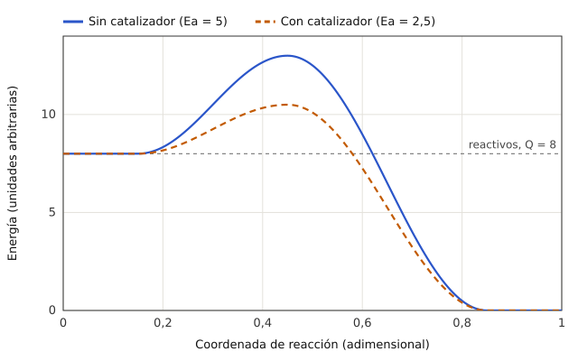
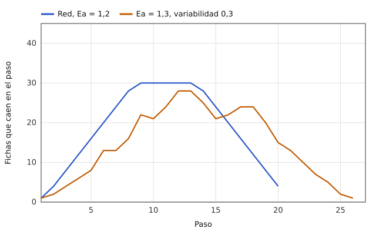
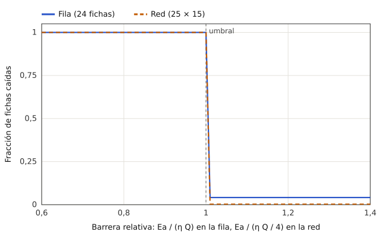
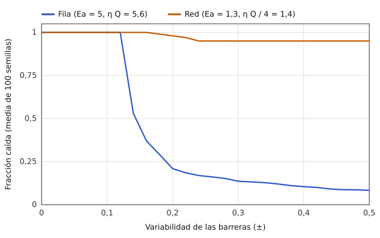

Preprint · documento de trabajo sin revisión por pares
Reacción en cadena: energía de activación, metaestabilidad y propagación con fichas de dominó
Chain reaction: activation energy, metastability and propagation with dominoes
Bruno Loiacono · Estudiante de Física, Universidad de Buenos Aires · Noviembre de 2026
Resumen
Una torre de dominó quieta que con un empujoncito se desmorona y libera mucha más energía de la que hizo falta para empezar reúne tres ideas centrales de la química: la energía de activación, la metaestabilidad y la reacción en cadena. Este trabajo las formula con un modelo de fichas que caen si la energía recibida alcanza su barrera $E_a$ y que, al caer, liberan $Q$ y pasan una fracción $\eta$ a sus vecinas. En una fila, la cadena se sostiene si y solo si $\eta Q \ge E_a$; en una red cuadrada, hace falta $\eta Q/4 \ge E_a$ para salir del centro. Con barreras irregulares, la fila se corta en el primer eslabón débil y la red lo rodea: con una variabilidad de $\pm 20~\%$, en promedio cae el 21 % de la fila y el 98 % de la red. Para una ficha real de $48 \times 24 \times 7{,}5$ mm, la barrera es el 1,4 % de la energía liberada, y fichas semejantes, cada una 1,5 veces más grande, se siguen tirando mientras $\eta \ge 0{,}073$. Se discuten la teoría del estado de transición, los catalizadores, la metaestabilidad, las cadenas químicas, nucleares, nerviosas y epidémicas, y dónde falla la metáfora: romper enlaces no libera energía.
Abstract
A standing domino tower that collapses after a tiny push, releasing far more energy than it took to start, combines three central ideas of chemistry: activation energy, metastability and chain reactions. This paper formulates them with a model of tiles that fall when the energy they receive reaches their barrier $E_a$ and, upon falling, release $Q$ and pass a fraction $\eta$ to their neighbours. In a row, the chain sustains itself if and only if $\eta Q \ge E_a$; in a square lattice, $\eta Q/4 \ge E_a$ is needed to leave the centre. With irregular barriers, the row breaks at the first weak link while the lattice goes around it: with $\pm 20\%$ variability, on average 21% of the row and 98% of the lattice fall. For a real $48 \times 24 \times 7.5$ mm domino the barrier is 1.4% of the released energy, and geometrically similar dominoes, each 1.5 times larger, keep toppling as long as $\eta \ge 0.073$. Transition-state theory, catalysts, metastability, chemical, nuclear, neural and epidemic chains are discussed, together with where the metaphor fails: breaking bonds does not release energy.
Palabras clave: energía de activación; metaestabilidad; reacción en cadena; catálisis; percolación; enseñanza de la química.
Keywords: activation energy; metastability; chain reaction; catalysis; percolation; chemistry education.
1. Introducción
La idea original era una imagen: una torre de fichas de dominó, quieta, que con un empujoncito se desmorona y libera mucha más energía de la que hizo falta para empezar. La imagen captura tres conceptos que la química formuló por separado:
- Energía de activación. Casi todo lo que puede liberar energía necesita primero que se le ponga un poco. Una ficha parada tiene energía guardada, porque está alta, pero para caer tiene que inclinarse primero y levantar un poco su centro de masa.
- Metaestabilidad. Algo que podría liberar energía pero no lo hace, porque está atrapado detrás de una barrera. La torre quieta no es estable en el sentido de «no tener a dónde ir», sino en el de «no moverse si nadie la toca».
- Reacción en cadena. Cuando la energía que libera una pieza alcanza para activar a la siguiente, el proceso se sostiene solo.
La sección 2 cuenta de dónde vienen esos conceptos. La sección 3 define un modelo de fichas, deriva sus condiciones de propagación y calcula la barrera de una ficha real. La sección 4 evalúa el modelo en una fila y en una red. La sección 5 discute los paralelos fuera de la química y dónde la metáfora deja de valer.
2. Antecedentes
2.1. La física de las fichas
Shaw (1978) estudió la mecánica de una fila de fichas que caen; McLachlan et al. (1983) calcularon la velocidad con que se propaga la caída, y van Leeuwen (2010) analizó las fuerzas entre fichas, el rozamiento y la dependencia de la velocidad con el ancho, la altura y la separación de las fichas. Whitehead (1983) describió una fila en la que cada ficha es más grande que la anterior: como la barrera de cada una es chica frente a la energía que libera la anterior, la fila puede crecer de tamaño en cada paso y amplificar enormemente la energía del empujón inicial.
2.2. La energía de activación
Arrhenius (1889) estudió cómo la temperatura acelera la inversión de la sacarosa en medio ácido y propuso que solo las moléculas con energía por encima de un umbral pueden reaccionar. La constante de velocidad queda
con $A$ un factor de frecuencia con las unidades de $k$, $E_a$ en $\mathrm{J\,mol^{-1}}$, $R$ en $\mathrm{J\,mol^{-1}\,K^{-1}}$ y $T$ en K, de modo que el exponente es adimensional. Eyring (1935) y, de manera independiente, Evans y Polanyi (1935) formularon la teoría del estado de transición: los reactivos pasan por una configuración intermedia, el complejo activado, que es el punto más alto del camino de menor energía, y la energía de activación es su altura sobre los reactivos. Kramers (1940) trató el cruce de la barrera como el escape de una partícula de un pozo, sacudida por el ruido térmico y frenada por la fricción.
2.3. Catalizadores
Desde Berzelius, que acuñó la palabra en 1835, y Ostwald, que dio la definición moderna, un catalizador es una sustancia que cambia la velocidad de una reacción sin consumirse y sin modificar el equilibrio: baja la barrera y deja intacta la energía liberada. La síntesis de amoníaco de Haber y Bosch, con un catalizador de hierro, es la base de los fertilizantes de los que depende buena parte de la producción mundial de alimentos (Smil 2001). Las enzimas son los catalizadores de la vida: algunas reacciones que catalizan tendrían, sin ellas, vidas medias comparables con la edad de la Tierra (Wolfenden y Snider 2001).
2.4. Metaestabilidad
Un estado es metaestable si resiste perturbaciones chicas pero no grandes, porque hay otro de menor energía detrás de una barrera. El diamante es metaestable frente al grafito a presión y temperatura ambiente, con una barrera tan alta que la conversión no se observa. El agua muy pura puede enfriarse por debajo de 0 °C sin congelarse hasta que aparece un núcleo de hielo, y entonces el congelamiento se propaga como una cadena. Un vidrio es un líquido que se enfrió tan rápido que quedó atrapado en una configuración desordenada; Anderson (1995) lo consideró probablemente el problema sin resolver más profundo de la física del estado sólido.
2.5. Reacciones en cadena
Bodenstein (1913) encontró que en la reacción de hidrógeno y cloro iluminada reaccionaban muchísimas moléculas por cada fotón absorbido, y propuso que la reacción procedía en cadena: el fotón produce una especie reactiva que reacciona y produce otra, en etapas de iniciación, propagación y terminación. Semenov (1935) desarrolló la teoría de las cadenas ramificadas, en las que cada eslabón produce más de una especie activa y la reacción pasa de lenta a explosiva al cruzar ciertos límites. Staudinger (1920) defendió la existencia de las macromoléculas que hoy se fabrican por polimerización en cadena. Molina y Rowland (1974) mostraron que el cloro liberado por los clorofluorocarbonos destruye el ozono en una cadena catalítica en la que el cloro se regenera, y Farman et al. (1985) midieron las grandes pérdidas de ozono sobre la Antártida. Saiki et al. (1985) publicaron la primera aplicación de la reacción en cadena de la polimerasa, en la que cada copia de ADN produce dos en el ciclo siguiente.
El concepto saltó a la física con la fisión nuclear, que Meitner y Frisch (1939) interpretaron poco después de su descubrimiento: cada fisión libera neutrones que pueden producir nuevas fisiones. También describe el impulso nervioso, que Hodgkin y Huxley (1952) modelaron como una despolarización que, al superar un umbral, despolariza el tramo vecino; las epidemias, en el modelo de Kermack y McKendrick (1927); la percolación de Broadbent y Hammersley (1957), cuyo umbral en la red cuadrada da Stauffer y Aharony (1994); las avalanchas de la criticalidad autoorganizada de Bak et al. (1987) y Bak (1996); y los frentes de reacción-difusión de Fisher (1937).
3. Modelo
3.1. Reglas
Hay $N$ fichas, en una fila de 24 o en una red cuadrada de $25 \times 15$. Las energías del modelo están en una unidad arbitraria común. Cada ficha $i$ tiene una barrera $E_{a,i}$ y acumula la energía que recibe; cae cuando la energía acumulada alcanza su barrera. Al caer libera $Q$ y entrega $\eta Q$ a su vecina siguiente en la fila, o $\eta Q/4$ a cada uno de sus cuatro lados en la red, donde la energía que sale por el borde se pierde. Una ficha caída no recibe más energía. La simulación avanza por pasos: en cada uno caen todas las fichas que alcanzaron su barrera. La primera ficha, en la red la del centro, recibe un empujón $E_0$. Las barreras pueden variar de ficha a ficha como $E_{a,i} = E_a(1 + v\,u_i)$, con $u_i$ uniforme en $[-1, 1]$ y $v$ la variabilidad. Un catalizador baja todas las barreras a la mitad.
3.2. Condiciones de propagación
En una fila sin variabilidad, cada ficha recibe exactamente $\eta Q$ de la anterior. La primera cae si $E_0 \ge E_a$, y la cadena se sostiene si y solo si
una desigualdad entre energías en la misma unidad. Después de la primera ficha, el empujón ya no importa: un empujón enorme no salva una cadena con $\eta Q < E_a$. En la red, las fichas vecinas del centro reciben $\eta Q/4$, y la cadena sale del centro si
Una vez en marcha, una ficha de la red puede recibir energía de varias vecinas caídas, así que tolera barreras irregulares que cortarían una fila. El frente avanza un sitio por paso en distancia de Manhattan: con el empujón en $(c_0, f_0)$, la ficha $(c, f)$ cae en el paso $1 + |c - c_0| + |f - f_0|$.
3.3. Una ficha real
Una ficha de alto $h$, espesor $e$ y masa $m$, parada, tiene su centro de masa a $h/2$; acostada, a $e/2$. Para caer tiene que inclinarse hasta que su diagonal quede vertical, con el centro de masa a $\sqrt{h^2 + e^2}/2$. La barrera y la energía liberada son
en joules, con $m$ en kg, $g$ en $\mathrm{m\,s^{-2}}$ y las longitudes en metros. Su cociente $E_a/Q$ no depende de $m$ ni de $g$.
Si cada ficha es semejante a la anterior pero $s$ veces más grande, su masa escala como $s^3$ y sus alturas como $s$, así que sus energías escalan como $s^4$. La ficha $n$ tira a la $n+1$, más grande, si $\eta Q_n \ge E_{a,n+1} = s^4 E_{a,n}$, es decir, si
adimensional. Mientras se cumpla, la energía liberada crece en un factor $s^4$ por ficha.
3.4. Perfil de energía
Cada ficha se puede dibujar como una reacción: los reactivos (la ficha parada) a una altura $Q$, una barrera de altura $E_a$ por encima, y los productos (la ficha caída) en cero. Es el diagrama de la teoría del estado de transición, con la ficha inclinada justo sobre su borde como complejo activado (figura 1).

4. Resultados
Todas las cifras salen de paper/figuras/generar.js.
4.1. La fila
Con $E_a = 5$, $Q = 8$, $\eta = 0{,}7$ y $E_0 = 6$, se cumple $\eta Q = 5{,}6 \ge 5$: caen las 24 fichas en 24 pasos y se liberan $24 \cdot 8 = 192$ unidades. Con $E_a = 6$ la primera ficha cae, porque el empujón alcanza justo, pero a la segunda le llegan $5{,}6 < 6$ y la cadena se corta. Con el catalizador, la barrera baja a 3 y vuelve la cadena completa, con la misma energía liberada. Con un empujón de 4,5, menor que la barrera, no cae ninguna: hay 192 unidades guardadas que no se liberan. Es la metaestabilidad.
Con variabilidad $v = 0{,}1$, las barreras van de 4,50 a 5,50, todas por debajo de 5,6, y cae la fila entera. Con $v = 0{,}2$ van de 4,01 a 5,99, y la cadena se corta en la tercera ficha.
4.2. La red
Con $E_a = 1{,}2$ y el resto igual, a cada vecina le llega $\eta Q/4 = 1{,}4 \ge 1{,}2$. Caen las 375 fichas en 20 pasos: el centro está en $(12, 7)$ y la ficha más lejana, en una esquina, está a $12 + 7 = 19$ pasos, más el paso inicial. La cantidad de fichas que caen por paso es 1, 4, 8, 12, …, 28: crece de a 4, como un rombo, hasta que el frente toca los bordes, se estabiliza en 30 y después decrece (figura 2). Con $E_a = 1{,}4$, justo en el umbral \eqref{eq:red}, cae todo; con $1{,}5$, solo cae el centro. Con $E_a = 1{,}3$ y variabilidad 0,2 o 0,3 cae todo, pero en 24 y 26 pasos: el frente rodea las fichas difíciles y las tira después, cuando ya cayeron varias de sus vecinas.

4.3. El umbral
La figura 3 muestra la fracción de fichas caídas en función de la barrera relativa, con un empujón grande: en la fila y en la red, el paso de cadena completa a cadena muerta ocurre exactamente donde predicen las ecuaciones \eqref{eq:fila} y \eqref{eq:red}.

4.4. Barreras irregulares
Promediando 100 configuraciones de barreras al azar, con una variabilidad de $\pm 20~\%$ cae en promedio el 20,9 % de la fila y el 98,0 % de la red; con $\pm 50~\%$, el 8,3 % y el 95,0 % (figura 4). Una fila se corta en el primer eslabón débil. Una red lo rodea, porque una ficha con barrera alta puede acumular energía de varias vecinas: la redundancia la hace robusta.

4.5. Una ficha real
Para una ficha de $h = 48$ mm, ancho 24 mm y $e = 7{,}5$ mm, la ecuación \eqref{eq:ficha} da una subida del centro de masa de 0,291 mm y una bajada de 20,25 mm: $E_a/Q = 0{,}0144$. Con una densidad supuesta de $1200\unid{kg\,m^{-3}}$, típica de un plástico, la ficha pesa 10,4 g, su barrera es de 29,6 µJ y libera 2,06 mJ. La barrera es el 1,4 % de la energía liberada: por eso basta un soplido para tirar una ficha bien parada. Con fichas semejantes, cada una 1,5 veces más grande, la energía crece un factor $1{,}5^4 = 5{,}06$ por ficha y $2{,}8 \times 10^8$ en doce saltos; la decimotercera ficha, empezando por una de 5 mm, mide 649 mm. La ecuación \eqref{eq:whitehead} dice que la amplificación funciona mientras $\eta \ge 0{,}073$: alcanza con que llegue a la ficha siguiente un 7 % de la energía liberada.
5. Discusión y limitaciones
5.1. Dónde falla la metáfora
El punto más importante es químico: romper un enlace siempre cuesta energía y formarlo siempre la libera. La energía de una reacción exotérmica viene de que los enlaces de los productos son, en conjunto, más fuertes que los de los reactivos. La idea contraria, que «la energía está en los enlaces que se rompen», es tan persistente que tiene su propia literatura: Boo (1998) la documentó en estudiantes y Galley (2004) la llamó un error conceptual persistente. La ficha parada puede reforzar ese error si se lee como «algo que guarda energía y la suelta al romperse». La lectura correcta es otra: la ficha parada es la configuración de reactivos, la caída es la de productos, $Q$ es la diferencia entre ambas y $E_a$ es el costo de pasar por la configuración intermedia, no «el enlace que se rompe».
Hay dos fallas más. Una reacción real no reparte su energía con una fracción $\eta$ fija sino como calor que se difunde entre muchísimas moléculas, y el calor que no alcanza para activar se disipa, mientras que en el modelo se acumula para siempre. Y una detonación no avanza de a una ficha sino como un frente; por eso existe el modo red, que sigue siendo una caricatura.
5.2. Termodinámica y cinética
El modelo separa dos números que la química también separa. $Q$ es termodinámica: cuánta energía se libera al pasar de reactivos a productos, que a presión constante es el cambio de entalpía y que, por la ley de Hess (1840), no depende del camino. Por eso un catalizador, que cambia el camino, no cambia $Q$. $E_a$ es cinética: cuán difícil es empezar, y sí depende del camino. «Puede pasar» no es lo mismo que «pasa»: la madera y el oxígeno del aire tienen más energía juntos que el dióxido de carbono y el agua en que se convertirían, pero sin una llama que supere la barrera una mesa dura siglos.
5.3. La misma desigualdad en otros sistemas
La condición \eqref{eq:fila} reaparece con otros nombres. En un reactor nuclear, el factor de multiplicación $k$, el número medio de fisiones que produce cada fisión, decide si la cadena se apaga ($k < 1$), se sostiene ($k = 1$) o crece ($k > 1$); las barras de control hacen lo contrario de un catalizador: bajan $\eta$. En una epidemia, el número reproductivo básico $R_0$ cumple el mismo papel, y si la fracción inmunizada supera
la cadena no puede sostenerse (Kermack y McKendrick 1927). En la red, las fichas difíciles hacen del modelo un problema de percolación con un giro: no están ausentes, sino que necesitan energía de más de una vecina. Y el frente que avanza a velocidad constante es la versión discreta de los frentes de reacción-difusión,
con $D$ en $\mathrm{m^2\,s^{-1}}$, $r$ en $\mathrm{s^{-1}}$ y $v$ en $\mathrm{m\,s^{-1}}$ (Fisher 1937).
5.4. En el aula
El modelo cubre la existencia de una barrera aunque la reacción libere energía, la diferencia entre $Q$ y $E_a$, el efecto de un catalizador y la idea de umbral y propagación. No cubre la temperatura, que en una reacción real es la mano que empuja según la ecuación \eqref{eq:arrhenius}; la concentración; el equilibrio químico; ni las reacciones endotérmicas, que en la metáfora serían fichas que hay que levantar. Una secuencia posible empieza con fichas reales y una regla, para medir la subida y la bajada del centro de masa; sigue con el modelo de la fila y el catalizador; y termina con la red, la percolación y la discusión explícita de dónde falla la metáfora, para que la analogía no se convierta en un error conceptual.
5.5. Limitaciones
- Es una metáfora, no una simulación química: no hay temperatura, difusión del calor ni cinética real.
- La regla de reparto de la energía es una simplificación elegida para que el umbral se vea claro, y la energía acumulada no se disipa.
- Las energías del modelo no tienen unidades; solo las de la ficha real, que además dependen de una densidad supuesta.
- El catalizador baja siempre la barrera exactamente a la mitad.
6. Conclusiones y trabajo futuro
Una fila de fichas reúne tres ideas que la química tardó décadas en formular: que casi todo lo que puede liberar energía necesita un empujón inicial, que las cosas pueden estar quietas sin estar a salvo y que una liberación de energía se sostiene sola si cada eslabón activa al siguiente. El modelo reduce todo a la desigualdad $\eta Q \ge E_a$, muestra qué hace un catalizador y por qué una red tolera mucho mejor que una fila las barreras irregulares, y deja claro dónde la metáfora deja de servir. El trabajo futuro es agregar un modo de fichas crecientes que verifique la condición \eqref{eq:whitehead}, una versión con temperatura en la que las fichas tiemblan y algunas caen solas, y probar la secuencia didáctica con fichas reales.
Declaración de uso de IA
Este trabajo se redactó con asistencia de Claude (Anthropic), un modelo de lenguaje, a partir de una guía previa del autor. El modelo propuso la estructura, la redacción, las derivaciones y chequeos de unidades y el script que genera las figuras; el alcance y las decisiones son del autor, que es responsable del contenido. Las referencias se verificaron contra Crossref, Open Library y las páginas citadas con paper/verificar_bib.py, y todas las cifras de la sección 4 salen de paper/figuras/generar.js.
Referencias
- Anderson, P. W. (1995). Through the glass lightly. Science, 267(5204), 1615–1616. https://doi.org/10.1126/science.267.5204.1615-e
- Arrhenius, S. (1889). Über die Reaktionsgeschwindigkeit bei der Inversion von Rohrzucker durch Säuren. Zeitschrift für Physikalische Chemie, 4(1), 226–248. https://doi.org/10.1515/zpch-1889-0416
- Bak, P., Tang, C. y Wiesenfeld, K. (1987). Self-organized criticality: An explanation of the 1/f noise. Physical Review Letters, 59(4), 381–384. https://doi.org/10.1103/PhysRevLett.59.381
- Bak, P. (1996). How Nature Works: The Science of Self-Organized Criticality. Copernicus. https://openlibrary.org/works/OL3265980W
- Bodenstein, M. (1913). Eine Theorie der photochemischen Reaktionsgeschwindigkeiten. Zeitschrift für Physikalische Chemie, 85(1), 329–397. https://doi.org/10.1515/zpch-1913-8512
- Boo, H. K. (1998). Students' understandings of chemical bonds and the energetics of chemical reactions. Journal of Research in Science Teaching, 35(5), 569–581. https://doi.org/10.1002/(SICI)1098-2736(199805)35:5<569::AID-TEA6>3.0.CO;2-N
- Broadbent, S. R. y Hammersley, J. M. (1957). Percolation processes: I. Crystals and mazes. Mathematical Proceedings of the Cambridge Philosophical Society, 53(3), 629–641. https://doi.org/10.1017/S0305004100032680
- Evans, M. G. y Polanyi, M. (1935). Some applications of the transition state method to the calculation of reaction velocities, especially in solution. Transactions of the Faraday Society, 31, 875–894. https://doi.org/10.1039/TF9353100875
- Eyring, H. (1935). The activated complex in chemical reactions. The Journal of Chemical Physics, 3(2), 107–115. https://doi.org/10.1063/1.1749604
- Farman, J. C., Gardiner, B. G. y Shanklin, J. D. (1985). Large losses of total ozone in Antarctica reveal seasonal ClOx/NOx interaction. Nature, 315(6016), 207–210. https://doi.org/10.1038/315207a0
- Fisher, R. A. (1937). The wave of advance of advantageous genes. Annals of Eugenics, 7(4), 355–369. https://doi.org/10.1111/j.1469-1809.1937.tb02153.x
- Galley, W. C. (2004). Exothermic bond breaking: A persistent misconception. Journal of Chemical Education, 81(4), 523–525. https://doi.org/10.1021/ed081p523
- Hess, H. (1840). Thermochemische Untersuchungen. Annalen der Physik, 126(6), 385–404. https://doi.org/10.1002/andp.18401260620
- Hodgkin, A. L. y Huxley, A. F. (1952). A quantitative description of membrane current and its application to conduction and excitation in nerve. The Journal of Physiology, 117(4), 500–544. https://doi.org/10.1113/jphysiol.1952.sp004764
- Kermack, W. O. y McKendrick, A. G. (1927). A contribution to the mathematical theory of epidemics. Proceedings of the Royal Society of London A, 115(772), 700–721. https://doi.org/10.1098/rspa.1927.0118
- Kramers, H. A. (1940). Brownian motion in a field of force and the diffusion model of chemical reactions. Physica, 7(4), 284–304. https://doi.org/10.1016/S0031-8914(40)90098-2
- McLachlan, B. G., Beaupre, G., Cox, A. B. y Gore, L. (1983). Falling dominoes (D. E. Daykin). SIAM Review, 25(3), 403–404. https://doi.org/10.1137/1025085
- Meitner, L. y Frisch, O. R. (1939). Disintegration of uranium by neutrons: A new type of nuclear reaction. Nature, 143(3615), 239–240. https://doi.org/10.1038/143239a0
- Molina, M. J. y Rowland, F. S. (1974). Stratospheric sink for chlorofluoromethanes: Chlorine atom-catalysed destruction of ozone. Nature, 249(5460), 810–812. https://doi.org/10.1038/249810a0
- Saiki, R. K., Scharf, S., Faloona, F., Mullis, K. B., Horn, G. T., Erlich, H. A. y Arnheim, N. (1985). Enzymatic amplification of β-globin genomic sequences and restriction site analysis for diagnosis of sickle cell anemia. Science, 230(4732), 1350–1354. https://doi.org/10.1126/science.2999980
- Semenov, N. N. (1935). Chemical Kinetics and Chain Reactions. Clarendon Press. https://openlibrary.org/works/OL12937315W
- Shaw, D. E. (1978). Mechanics of a chain of dominoes. American Journal of Physics, 46(6), 640–642. https://doi.org/10.1119/1.11221
- Smil, V. (2001). Enriching the Earth: Fritz Haber, Carl Bosch, and the Transformation of World Food Production. MIT Press. https://openlibrary.org/works/OL1855338W
- Staudinger, H. (1920). Über Polymerisation. Berichte der deutschen chemischen Gesellschaft, 53(6), 1073–1085. https://doi.org/10.1002/cber.19200530627
- Stauffer, D. y Aharony, A. (1994). Introduction to Percolation Theory. Taylor & Francis. https://openlibrary.org/works/OL20989433W
- van Leeuwen, J. M. J. (2010). The domino effect. American Journal of Physics, 78(7), 721–727. https://doi.org/10.1119/1.3406154
- Whitehead, L. A. (1983). Domino “chain reaction”. American Journal of Physics, 51(2), 182. https://doi.org/10.1119/1.13456
- Wolfenden, R. y Snider, M. J. (2001). The depth of chemical time and the power of enzymes as catalysts. Accounts of Chemical Research, 34(12), 938–945. https://doi.org/10.1021/ar000058i